“应计项目”的衡量
请点击 ACCRUAlS 关于应计项目的介绍。本页主要关注应计项目的衡量。
衡量“应计项目”和现金流量
公司报告利润和其实际现金流之间的差额称为 “ 应计项目 ” 。应计项目的核心部分可以用企业流动经营资产净额 ( 流动资产 - 流动负债 ) 的变化来衡量，这通常被称为营运资本应计项目。现金不包括在流动资产中，因为应计项目是由于非现金资产的变化而产生的。流动负债中的债务也不包括在内，因为它们属于财务活动而不是经营活动。具体地说，营运资本应计项目可以写如下 :
营运资本应计项目 = 流动资产的变动 ( 不包括现金 )- 流动负债的变动 ( 不包括流动负债中的债务 ) (1)
例如，在 2019 年，某公司 X 的流动资产增加了 6000 万人民币 ( 不包括现金 ) ，流动负债增加了 2000 万人民币 ( 不包括流动负债中的债务 ) 。假设其他运营资产没有变化，那么，该公司的营运资应计项目就是 6000-20000=4000( 万人民币 ) 。
应计项目也常被定义为包括固定资产（如厂房和设备）的折旧。折旧记为一种负的应计项目，以表示固定资产在未来产生收益的能力会下降。这个定义下的应计项目被称为总应计项目，其计算方法如下 :
总应计项目 = 流动资产变动 ( 不含现金 ) - 流动负债变动 ( 不含负债 ) - 折旧 (2)
假设在 2019 年，公司 X 有 1000 万人民币的折旧费用。那么该公司的总应计项目就是 6000-2000-1000= 3000 万人民币。
公司的利润（ ( 折旧后营业收入 ) ）与总应计项目之间的差额称为经营活动现金流，它表示公司正常经营活动产生的现金，即
营运活动现金流量 = 利润 - 总应计项目 (3)
如果公司 X 在 2019 年的利润为 1 亿元，那么该公司的运营活动现金流为 10000-3000=7000 万元。这表明，该公司录得 1 亿元的会计利润，但只收到 7000 万元的现金。
衡量应计项目和盈余的质量
当期应计项目较高的公司其后期往往会录得较低的收益 （这个特性被称为应计项目的低持续性， 请参看 ACCRUAlS ），因为应计项目所预期的未来收益可能不能完全变现。因此，当应计项目与实际现金流之间的匹配关系较弱时（也就是当应计项目估计误差较大时），应计项目的低持续性效应就会更强。为了评估应计项目的收益持续性，我们可以把应计项目跟往期、当期、和下一期的实际现金流做一个回归，得到的与这些现金流无关的应计项目部分就可以用来衡量应计项目与实际现金流匹配关系的误差。
具体来说，可以将某公司在 t 年的营运资本应计项目与 t-1 年、 t 年、 t+1 年的经营活动现金流对应上，然后进行回归分析。这样，每年都可以得到一个估计误差项，即拟合值与实际应计项目之间的差值。这个误差项便代表了当年应计项目与实际现金流之间的误差。较大的误差项意味着应计项目与实际现金流之间更不匹配。所有年份的误差项的方差便可以用来衡量公司盈余或应计项目的质量。方差越大质量越低。回归模型的详细信息在本网页的附录中有提供。
电子表格模板
这里提供了一个电子表格模板， 专门为 $$AA 用于计算其应计项目具体水平、应计项目与实际现金流之间的误差项，以及这些误差项的方法。请点击 应计项目计算器 下载这个模板。
查看结果前，请先根据公司刚刚公布的财务报告输入 2019 年的财务信息。也就是请更如下所示绿色单元格中的信息。其他年份的资料已经包括在表格内。
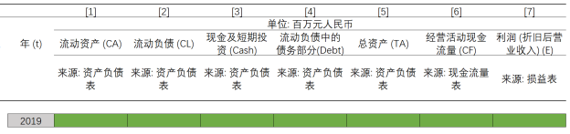
输入信息后，你将在右下角看到结果 ( 如下图所示 ) 。其包括公司 2019 年应计项目的水平 ，过去十年应计项目的平均水平， 2019 年应计项目与实际现金流之间的误差项，以及过去十年这个误差项的方差。此外，还给出了公司这些指标在其所在行业和整个市场中的位置。 Q1 表示本指标处于非常低的水平 ( 在最底部的 25%) ， Q2 表示较低水平 ( 处于 25%-50% 之间 ) ， Q3 表示较高水平 ( 处于 50%-75% 之间 ) ， Q4 表示非常高水平 ( 处于最顶部的 75%) 。
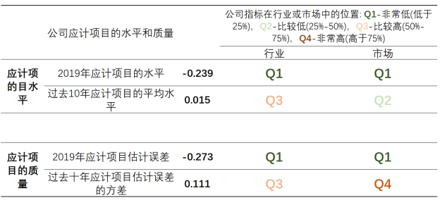
附录 : 回归模型
为了衡量公司盈余和应计项目的质量，我们使用以下模型对应计项目和现金流进行回归 1 :
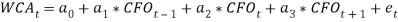
- 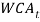 ： t 年的营运资本应计项目 , 如方程 (1) 所定义。具体地 , 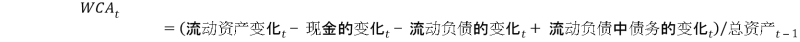 。
-
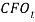
：
t
年现金流量表里的经营活动现金流量，除以
t-1
这个模型可以对一个公司进行单独估计。即，使用一个公司当前和过去的年度数据 ( 至少需要 5 次观察 ) 进行 OLS 回归分析 1 。
因此，误差项 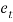 反映了应计项目在多大程度上匹配了实际发生的现金流。这个值越大表示匹配越差。 的方差便可以用来衡量盈余和应计项目的质量。这个方差越大表明这个公司的盈余和应计项目的质量越低。
如果应计项目被定义为包含了折旧，那么我们可以通过使用以下模型来估计应计项目的质量 2 :
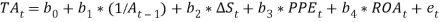
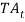
：
t
年的总应计项目
,
如方程
(2)
所定义。具体地，
 。
。
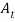 ： t 年的总资产。
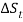 ： t-1 年到 t 年总营业额的变化，除以 t-1 年的总资产。
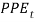 ： t 年产权，厂房和设备的净值，除以 t-1 年的总资产。
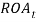 ： t 年净收益除以总资产。
误差项 衡量应计项目的质量。 的值越高以及波动越大表明收益和应计项目的质量越低。
文献
1 Dechow, P. M. & Dichev, I. D. The quality of accruals and earnings: The role of accrual estimation errors. The Accounting Review 77 , 35-59 (2002).
2 Kothari, S. P., Leone, A. J. & Wasley, C. E. Performance matched discretionary accrual measures. Journal of Accounting and Economics 39 , 163-197 (2005).